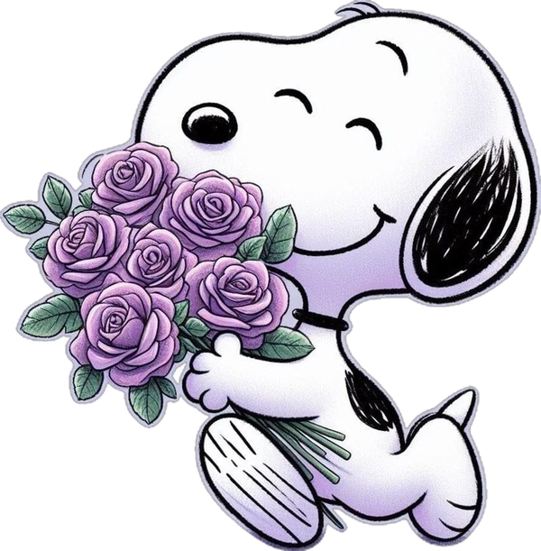

Ahora suena: tu fiesta
Gracias,
hermanita
Llegaste como mi vecina y te quedaste como mi hermana. Gracias por dejarme tocar y ser tu DJ en tu fiesta, y por confiarme la música de tu noche.
Cada canción sonó para ti. Verte bailar fue el mejor aplauso que pude pedir.

¿Cómo las quieres?
Nunca serás espectadora, hermanita
Con cariño, tu DJ